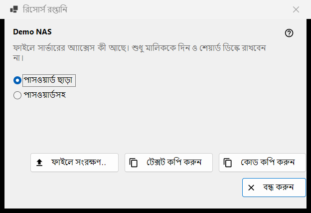
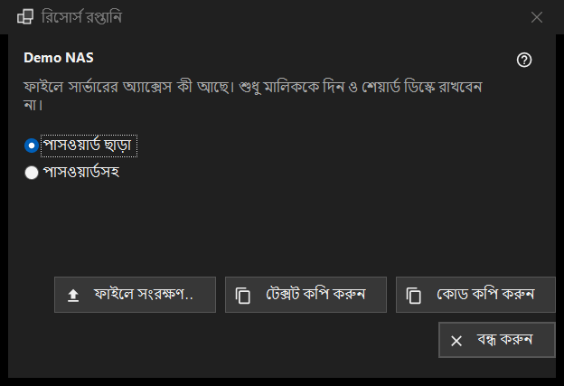

রিসোর্স রপ্তানি
এটি কীসের জন্য
একটি SFTP সার্ভারের সেটিংস এমনভাবে তৈরি করে যাতে অন্য কম্পিউটার বা ফোন সেগুলো আমদানি করতে পারে। এটি রিসোর্স তালিকার আরও মেনুর এক্সপোর্ট.. কমান্ড থেকে খোলে এবং এর জন্য একটি নির্বাচিত রিসোর্স লাগে; Share Manager-এর শেয়ার করা ফোল্ডার এর বদলে Share Manager থেকে এক্সপোর্ট করা হয়।


এই ক্রমে
- রিসোর্সের নামের নিচের সতর্কবার্তা পড়ুন।
- পাসওয়ার্ড ছাড়া (ডিফল্ট) বা পাসওয়ার্ডসহ বেছে নিন।
- ফাইলে সংরক্ষণ করুন.. বোতাম চাপুন, অথবা সেটিংস টেক্সট বা ছোট কোড হিসেবে কপি করুন।
- ফলটি শুধু তার মালিককে দিন।
উপাদানসমূহ
সতর্কবার্তা
নামের নিচের লাইনটি বলে যে ফাইলে সার্ভারের অ্যাক্সেস কী আছে: এটি শুধু তার মালিককে দিন এবং কখনও শেয়ার করা ডিস্কে রেখে দেবেন না। এটি ফাইল, কপি করা টেক্সট ও কোড, তিনটির ক্ষেত্রেই প্রযোজ্য।
পাসওয়ার্ড ছাড়া বা সহ
পাসওয়ার্ড ছাড়া শুরুতে নির্বাচিত থাকে। পাসওয়ার্ডসহ কেবল তখনই সক্রিয় হয় যখন সংরক্ষিত পাসওয়ার্ড ফেরত পড়া যায়; নইলে এই ইঙ্গিত দেখায়: পাসওয়ার্ড সংরক্ষিত নেই - ফাইলটি এমনি ছাড়া হবে। পাসওয়ার্ডটি এক্সপোর্টের জন্য শুধু মেমরিতে ডিক্রিপ্ট হয় এবং আর কোথাও যায় না।
সংরক্ষণ, টেক্সট কপি, কোড কপি
ফাইলে সংরক্ষণ করুন.. সেভ ডায়ালগের মাধ্যমে একটি .fmscfg ফাইল লেখে; লেখক FAT বা exFAT ডিস্ক, নেটওয়ার্ক ডিস্ক এবং যেসব ফোল্ডার অন্য ব্যবহারকারীরা বদলাতে পারে সেগুলো প্রত্যাখ্যান করে, এবং কখনও অর্ধেক লেখা ফাইল রেখে যায় না। টেক্সট কপি করুন সেটিংস নথি ক্লিপবোর্ডে রাখে আর কোড কপি করুন একই বিষয়বস্তুর একটি ছোট কোড। দুটোই গোপনীয়তা চিহ্নসহ কপি হয় (ক্লিপবোর্ড ইতিহাস নেই, ক্লাউড সিঙ্ক নেই)। অবস্থা লাইন ফল দেখায়।
কী এক্সপোর্ট করা যায়
শুধু সেই SFTP সার্ভার যার কী ভিউয়ার আগে থেকেই মনে রেখেছে। উইন্ডো সব ক্ষেত্রেই খোলে, আর বোতাম চাপলে অবস্থা লাইনে প্রত্যাখ্যান দেখা যায়: নেটওয়ার্ক ফোল্ডার (SMB) এই ফাইল দিয়ে বর্ণনা করা যায় না; সার্ভারের কী মনে রাখা হয়নি (রিসোর্সটি একবার খুলে কী নিশ্চিত করুন); রিসোর্সের হস্তান্তর করার মতো কোনো ঠিকানা নেই; ফোল্ডারটি এমনভাবে লেখা যা ফাইল গ্রহণ করে না (এটি সম্পাদনা করুন.. দিয়ে ঠিক করুন)।